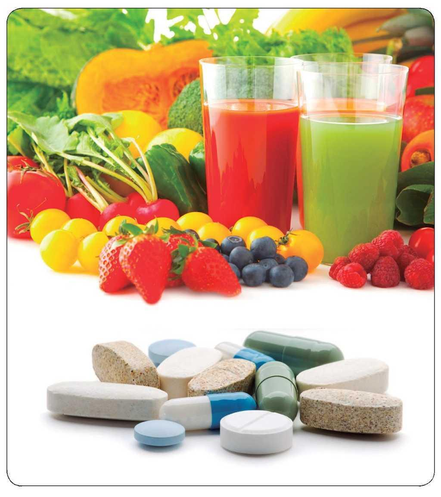

Cómo funcionan los suplementos alimenticios
Los suplementos alimenticios no son un sustitutivo de una alimentación saludable,
pero en algunos momentos de nuestra vida, como el embarazo o la tercera edad, nos pueden servir de ayuda.
Una alimentación saludable es la mejor forma de asegurarnos un aporte óptimo de vitaminas y nutrientes,
pero esto no impide que la oferta de suplementos alimenticios disponible en el mercado sea cada vez más amplia y variada.
Conocer cómo funcionan y cuándo son necesarios nos ayuda a darles un uso adecuado, siempre bajo supervisión médica, y a evitar su consumo injustificado.
¿Qué son los suplementos alimenticios?
Los suplementos alimenticios o dietéticos, como indica su nombre, son productos creados para complementar la alimentación o la dieta,
y entre sus ingredientes contienen minerales, vitaminas, enzimas, ácidos grasos y aminoácidos.
No son medicamentos, por lo que no pueden utilizarse como tales, aunque a veces se comercializan con indicaciones erróneas para aliviar síntomas o curar enfermedades.
Tampoco pueden considerarse un sustituto de alimentos convencionales, su objetivo es aportar nutrientes que en momentos puntuales o por circunstancias especiales,
no se estén consumiendo en cantidades suficientes.
Existen en diversos formatos: cápsulas, perlas, líquidos, polvos, píldoras o tabletas. Todos incluyen información sobre la dosis diaria recomendada, así como las contraindicaciones, cuando las hay.
¿De verdad son efectivos?
Sobre su efectividad, en una revisión de 1500 estudios se clasificaron los suplementos dietéticos más populares según la evidencia científica de sus resultados, desde muy alta hasta inexistente.
Entre ellos, algunos como el ácido fólico para embarazadas, o el calcio para contribuir a reducir la presión sanguínea, han demostrado una alta evidencia científica que respalda sus beneficios,
pero otros como el aceite de pescado y su aporte de Omega 3 para el bienestar general tienen una evidencia muy baja.
Que un producto esté muy de moda no siempre garantiza que tenga alguna utilidad demostrada, y en caso de tenerla, tampoco todos los suplementos funcionan igual para todo el mundo,
por eso siempre deben estar indicados por un médico, ya sea de atención primaria, endocrino o el especialista que nos esté tratando.
¿Cuándo se recomiendan los suplementos alimenticios?
Los suplementos nutricionales no deben sustituir en ningún momento una dieta equilibrada y completa,
aunque pueden servir para prevenir deficiencias nutricionales provocadas por alguna enfermedad o circunstancias puntuales, y promover la salud en general.
Estos son algunos de sus usos más frecuentes:
Suplementos alimenticios para embarazadas
El déficit de ácido fólico (vitamina B9) durante el embarazo está relacionado con problemas de desarrollo en el feto y mayor riesgo de defectos en el tubo neural,
por eso se recomienda el aumento de su consumo mediante determinados alimentos y en forma de suplementos, antes y después de la concepción.
El Ministerio de Sanidad también considera que podrían ser aconsejables los suplementos de hierro, para prevenir la anemia ferropénica,
y los de yodo para un correcto desarrollo cerebral del bebé.
Suplementos alimenticios para ancianos
La tercera edad es una etapa de nuestra vida en la que debemos poner mayor atención, cuidando mucho la nutrición.
La falta de apetito, la menor absorción de vitaminas y nutrientes, o la toma de algunos medicamentos,
pueden hacer que necesitemos la ayuda de algún suplemento alimenticio para complementar la dieta.
La mayoría de vitaminas y minerales dependen de que las enzimas digestivas funcionen correctamente para su total aprovechamiento,
algo que se va perdiendo con la edad. Esto ocurre, por ejemplo, con la vitamina B12, relacionada con la protección del cerebro y con una reducción del riesgo de padecer depresiones o demencia.
Suplementos alimenticios para vegetarianos
La vitamina B12 se encuentra únicamente en los alimentos de origen animal, por lo que también está recomendada para las personas que siguen una alimentación vegetariana o vegana.
Si tampoco se consume leche ni huevos hay que valorar si es necesario un aporte extra de hierro o de calcio, aunque por lo general se puede conseguir cubrir las cuotas óptimas a través de alimentos como las legumbres,
los frutos secos, las semillas, las verduras de hoja verde o el brócoli.
Además de en los casos que acabamos de mencionar, los suplementos dietéticos pueden resultar beneficiosos durante la menopausia,
cuando se practican deportes de alto rendimiento o cuando se sufre algún trastorno del estómago o el intestino que impide la correcta absorción de nutrientes.
Siempre bajo control médico
Aunque muchas veces se publicitan como algo natural y no se trata de medicamentos, los suplementos alimenticios tomados en exceso o de forma errónea pueden perjudicar nuestra salud.
Más cantidad no significa más beneficios, al contrario.
Las situaciones de mayor riesgo se dan durante el embarazo o en el transcurso de alguna enfermedad, si estamos tomando medicación,
antes o después de una operación quirúrgica o si combinamos varios suplementos.
Pero en cualquier momento las consecuencias de una mala administración pueden ser graves por lo que es primordial contar con supervisión médica a la hora de tomar suplementos y no excedernos con la dosis recomendada.
Los dietistas-nutricionistas también nos pueden ayudar a modificar nuestros hábitos por otros más saludables, con los que conseguir las vitaminas y minerales que nos hacen falta a través de lo que comemos cada día.